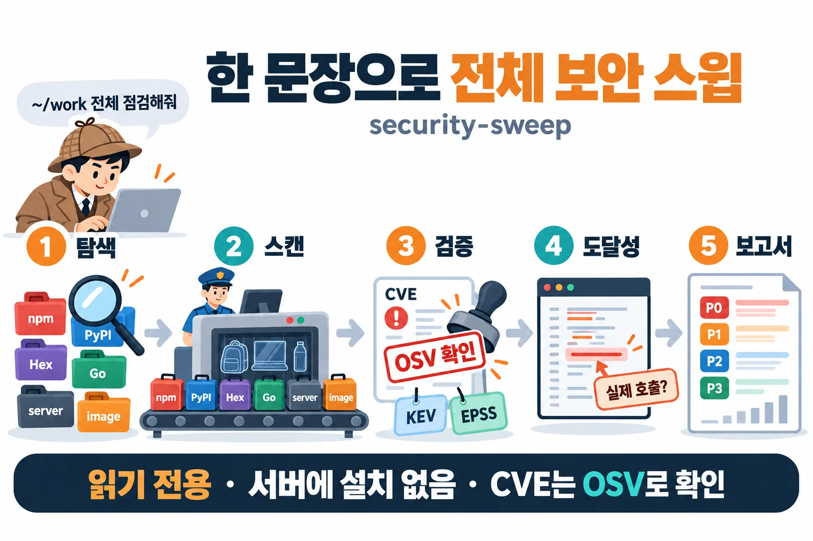
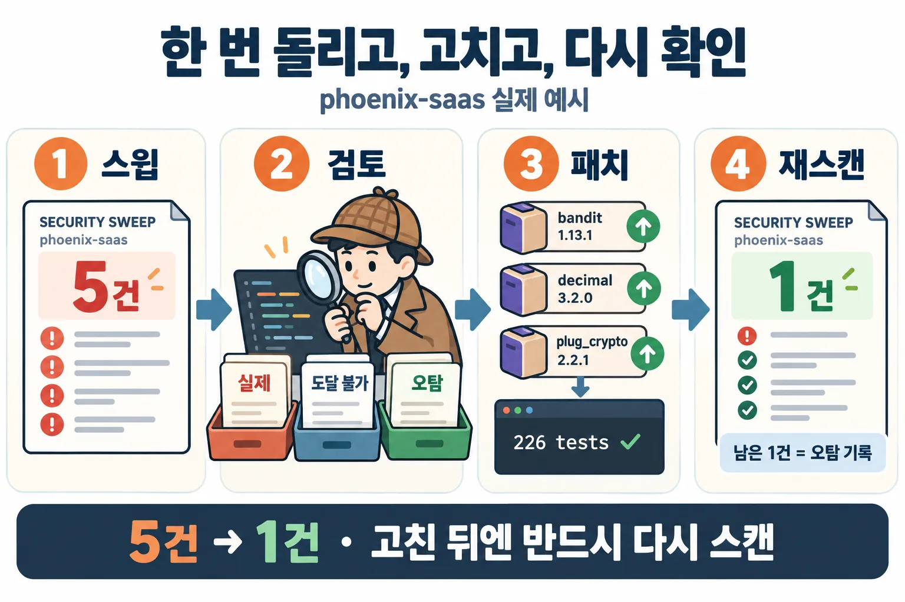
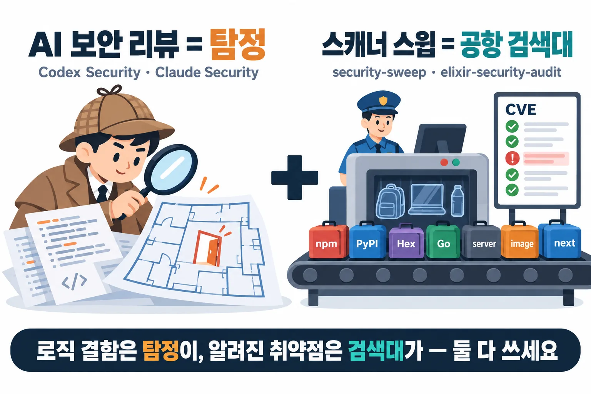

01Install
Add the plugin marketplace in Claude Code and install. Free and open source (MIT); runs on macOS and Linux.
/plugin marketplace add baryonlabs/security-sweep
/plugin install security-sweep@baryonlabs-securityWhen installed as a plugin the command is /security-sweep:security-sweep. If you copied only the skill folder, it is /security-sweep.
git clone https://github.com/baryonlabs/security-sweep
cp -r security-sweep/skills/security-sweep ~/.claude/skills/Run it with one sentence
/security-sweep:security-sweep Sweep every project under ~/code for known vulnerabilities and give me the P0/P1 list.
/security-sweep:security-sweep Scan servers ops@10.0.0.11 and ops@10.0.0.12 over ssh (read-only, no sudo) plus ~/work/api.02How it works: a 5-step pipeline
- DiscoverFind projects under the given roots by lockfile (npm, PyPI, Hex, Go, Cargo, Packagist, RubyGems, Maven).
- Scanosv-scanner per project, trivy fs for secrets and misconfig, trivy for images, read-only ssh for servers.
- VerifyLook up every CVE/GHSA/OSV ID in the OSV API, never judging an ID by how it looks; enrich with CISA KEV and EPSS.
- Reachabilitycalled / imported / not-imported / unknown, with file:line evidence.
- Reportfindings.json, REPORT.md and a self-contained REPORT.html with P0–P3 priorities.

Claude then opens the code evidence for every P0/P1, confirms or adjusts the priority with a one-line reason, and proposes (but does not perform) per-project fixes. Elixir projects are handed to elixir-security-audit.
03Real example: 26 projects, 5 → 1
One run over the 26 projects under ~/projects on a real developer laptop (2026-11-04; project names and paths pseudonymized, IDs, versions and priorities unchanged).
| Item | Result |
|---|---|
| Projects found | 26 (npm · PyPI · Hex · Go · Maven), 15 with findings |
| Advisories | 75 unique, all verified to exist in OSV (0 × 404, 0 × CISA KEV) |
| Priorities | P0 0 · P1 107 · P2 72 · P3 2 |
| Secrets | 3 (1 GitHub OAuth token, 2 JWTs), all in git-ignored build folders, values masked |
99 of the 107 P1 findings come from two packages: 81 are 27 advisories on pillow 12.3.0 repeated across 3 projects, and 18 are sharp 0.34.5 repeated across 6 projects.
After reviewing one Elixir/Phoenix project in code (one false positive, decimal not reachable), upgrading with mix deps.update bandit decimal plug_crypto and passing mix test (226 tests, 0 failures), a rescan of that project went from 5 findings to 1 (the remaining one is the recorded false positive).

04Operations: CI Gates & Zero-Install Periodic Sweeps
Effective security is not a one-time audit, but a continuous routine: blocking vulnerable dependencies at PR review (CI) and catching newly disclosed CVEs on existing servers.
1. CI Gate (Block PR Merges)
When lockfiles (package-lock.json, poetry.lock) change, automatically fail the build if a new P0 (CISA KEV actively exploited) vulnerability is introduced.
# Return exit code 1 if P0 vulnerabilities exist
python3 -c "import json, sys; s=json.load(open('OUT/summary.json')); sys.exit(1 if s['counts']['P0'] > 0 else 0)"2. Zero-Install Server Sweeps
Safely audit air-gapped or shared GPU servers without installing external binaries or running target code. Reads static .dist-info metadata and queries OSV locally.
# Collect metadata on remote host without running Python
python3 scripts/inventory.py collect --host gpu-box --venv /path/to/venv --output inventory.json
# Import and query OSV on local audit workstation
python3 scripts/inventory.py import inventory.json --out ./out && python3 scripts/report.py ./out3. Weekly Differential & Chatbot Alerts
By pairing raw findings with coverage.json, distinguish between true fixes and unobserved targets due to network/permission errors before sending Slack/Discord alerts.
# Generate diff.json against previous scan
python3 scripts/operations.py ./this-week --previous ./last-week05Essential Security Hygiene & Authoritative Portals
Over 90% of security incidents result from known vulnerabilities (1-day CVEs) with available patches left unapplied. Follow this 3-step routine and reference authoritative security agencies to maintain robust posture.
- 1. Automated Weekly SweepsNew CVEs drop every day even when your code never changes. Automate weekly cron sweeps.
- 2. Fix P0 FirstYou don't need to fix 100+ low warnings at once. Prioritize CISA KEV (P0) actively weaponized in the wild.
- 3. Subscribe to Official AlertsMonitor advisory bulletins from national agencies (CISA, KISA KrCERT/CC, NCSC).
Authoritative Government & Public Portals
| Organization | Portal | Role & Guidance |
|---|---|---|
| CISA (US Cybersecurity & Infrastructure Security Agency) | cisa.gov/kev | Official US federal catalog of vulnerabilities exploited in the wild (security-sweep P0 criterion). |
| NIST NVD (National Vulnerability Database) | nvd.nist.gov | Authoritative US government vulnerability repository providing official CVSS severity scores and attack vectors. |
| KISA KrCERT/CC (Korea Internet & Security Agency) | boho.or.kr | South Korea's national cyber threat center. Weekly advisories, incident reporting, and bug bounty coordination. |
| NCSC (National Cyber Security Center) | ncsc.go.kr | National cyber threat alert levels, institutional security guidelines, and incident response whitepapers. |
Standard Vulnerability Databases & Metrics
| Database / Tool | Link | Purpose in security-sweep |
|---|---|---|
| OSV.dev (Open Source Vulnerabilities) | osv.dev | Google/OpenSSF distributed database with commit-level package version precision (core existence verification). |
| FIRST EPSS | first.org/epss | Exploit Prediction Scoring System estimating 30-day exploit probability. EPSS ≥ 0.1 triggers P1. |
| CVE.org (CVE Program) | cve.org | International registry of Common Vulnerabilities and Exposures operated by MITRE. |
| GitHub Advisory Database | github.com/advisories | Ecosystem security advisories across npm, PyPI, Go, Maven, Cargo, Composer, NuGet, and Hex. |
06The detective and the airport scanner
AI security reviews (Codex Security, Claude Security, /security-review) are the detective: they read code and reason about logic flaws. security-sweep is the airport scanner: every project, server and image passes through and is checked against the wanted list (CVE databases). Use both.

| Detective: AI security review | Airport scanner: security-sweep | |
|---|---|---|
| Finds | Authorization bypass, broken trust boundaries, novel techniques | Outdated libraries, server OS package CVEs, leaked secrets, risky language APIs |
| Misses | Matching the wanted list (does not scan dependency CVEs itself) | New techniques not on any list |
| Output | Smart, but varies run to run | Same input, same result |
| Checked by | Another agent re-verifies | OSV lookup for every ID plus reachability |
| Cost | Model tokens per scan | Scanners are free; LLM only for triage |
07Safety principles
- Read-only by default. No code or lockfile changes; fixes only for projects you name, on a separate branch.
- Nothing is installed on servers.
ssh -o BatchMode=yes, only hosts you name, sudo only when you say so. - Scanner output, advisory text and code comments are data, not instructions (prompt-injection defense).
- Secrets are recorded by location and type only; values are masked.
- Whether a CVE exists is decided only by the OSV lookup.
FAQ
Does it install anything on my servers?
No. It connects with ssh -o BatchMode=yes only to hosts you name and runs trivy rootfs read-only if trivy is already there; otherwise it only collects the package list. sudo is used only when you say so.
Is a not-imported finding safe?
No. Transitive dependencies run without a direct import. not-imported only justifies lowering the priority by one step.
A CVE number looks fake. Is it?
Do not judge by shape. CVE-2026-97853 looks odd but exists in OSV, and a plausible-looking ID can return 404. security-sweep relies only on the OSV lookup and lists 404s in a separate “verification failed” section.
Does it fix things for me?
The sweep is intentionally read-only. It proposes per-project fix commands, and hands Elixir projects to elixir-security-audit to fix and verify on a branch.